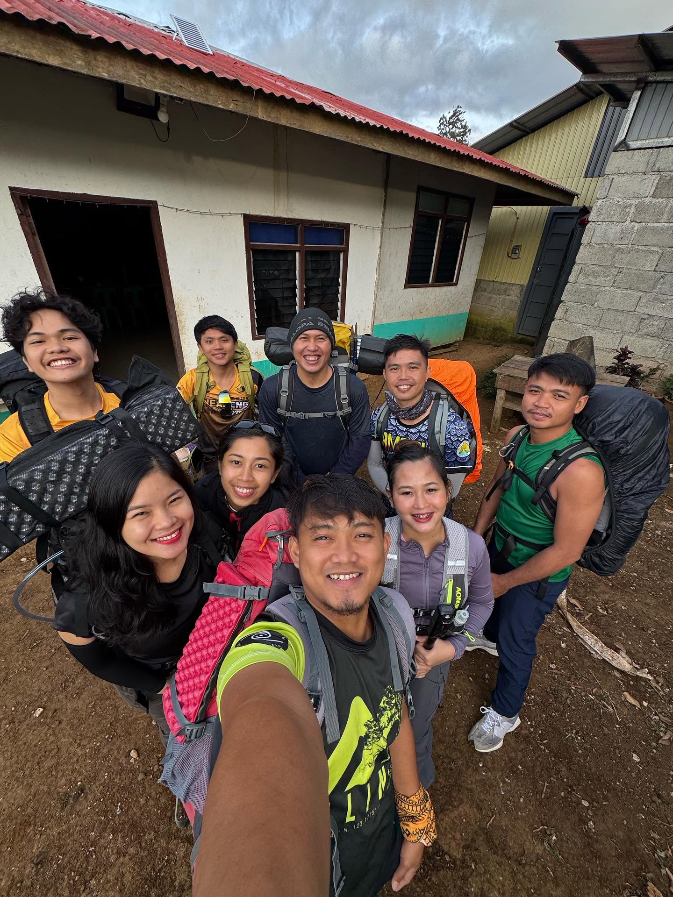

Ready for Adventure
Kapatagan, Digos
Day 1
Gathering at the Foothills
Our journey began in Digos City, Davao del Sur, at the registration point of the Digos-Kapatagan trail. Standing in the cool shadow of the dormant giant, our packs were heavy but our spirits were unmatched. We registered as mountaineers, did final checks on our gear, and posed for a pre-climb photo, ready to conquer the highest summit in the country.